001ZK // LIVING SYSTEM representa como rede, infraestrutura, automação, software e pesquisa se conectam — não como timeline, mas como arquitetura.
Current node — Minsait / Indra Company · Analista de Suporte de TI Jr
Previous node — Arroba Banda Larga · Analista de NOC / TI Interno
GPON · EPON · OLT · ONU · Zabbix · IXC · Proxmox · VPN · network troubleshooting · infrastructure · corporate IT · NOC · N2/N3 support
| NODE/NET | NETWORK | GPON · EPON · OLT · ONU · VPN |
| NODE/INF | INFRASTRUCTURE | NOC · ZABBIX · PROXMOX · LINUX · IXC |
| NODE/AUT | AUTOMATION | PYTHON · NODE.JS · GOOGLE APPS SCRIPT · APIS |
| NODE/SWE | SOFTWARE | JAVASCRIPT · GIT · GITHUB · SYSTEM DESIGN |
| NODE/RES | RESEARCH | HARDWARE · REUSE · SUSTAINABILITY |
R-01 / RESEARCH NODE — REUSABLE COMPUTING
Manual de Montagem de um Computador Reciclável Utilizando Peças Reaproveitadas
HARDWARE · REUSE · SUSTAINABILITY